1. はじめに
本書は、災害支援団体情報共有システム 災図(SIZU) の操作説明書です。災図は、支援団体さま日報データをデジタルデータとして管理します。災図には、以下の機能があります。
また、今後、2023年5月までに以下の機能を実装する予定です。
. 支援団体ビュー
支援団体のタイムラインを表示します。
. 支援先ビュー
支援先のタイムラインを表示します。
. 支援団体活動レポート
支援団体の日報のレポート表示します。
2. システム運用について
災図は、特定非営利活動法人 岡山NPOセンターが運用します。 システムについての要望・質問は、お問い合わせフォームをご利用ください。 システム開発のアドバイザーには、一般社団法人 情報支援レスキュー隊(ITDART)が参画しています。 なお、システム開発は、株式会社ＥｖｏＬｉＮＱ / 一般社団法人 データクレイドルで行っております。

3. システム管理情報
3.1. システム管理者ID / パスワード
システム管理者向けのIDとパスワードは、以下のとおりです。
-
ID
-
パスワード
（IDとパスワードは、別途ご案内いたします。）
4. 操作方法
災図の操作方法は、以下のとおりです。
4.1. 画面遷移図
災図の画面遷移図は。以下のとおりです。
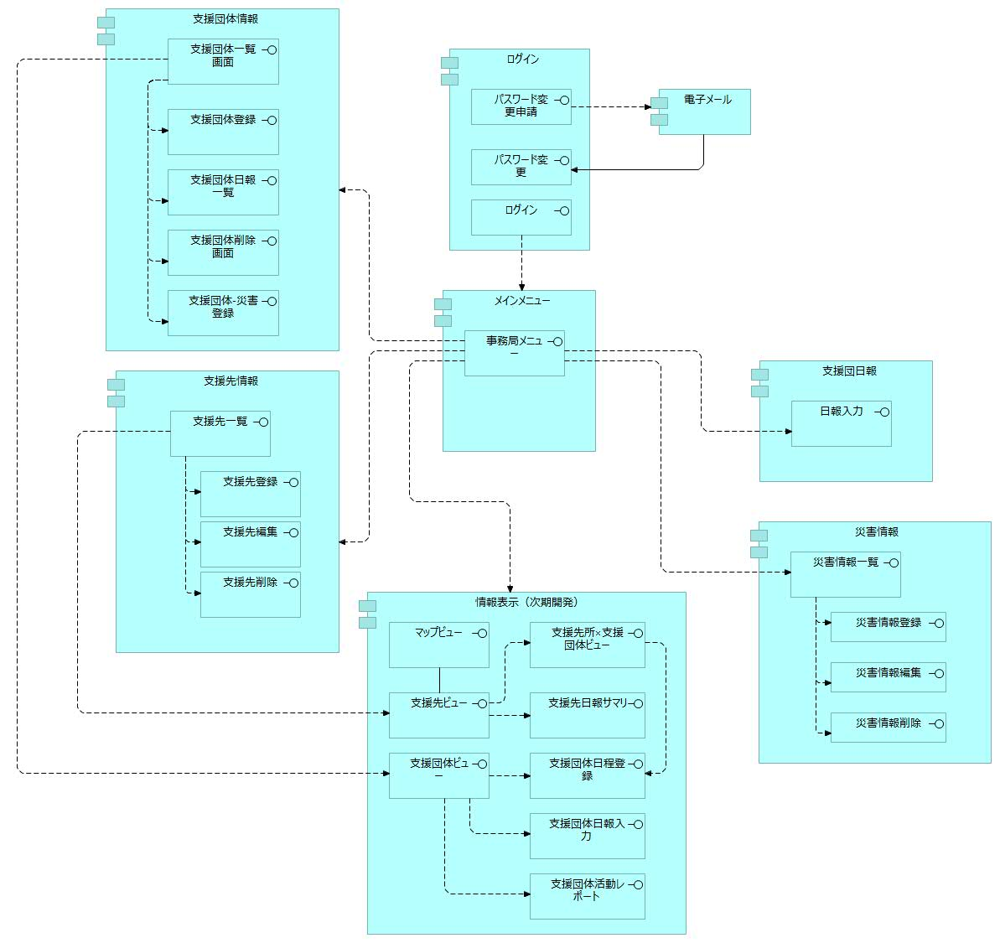
4.2. システムログイン
災図を利用するには、WEBブラウザを使って、以下のURLを開いてください。
https://npo.datacradle.jp/login
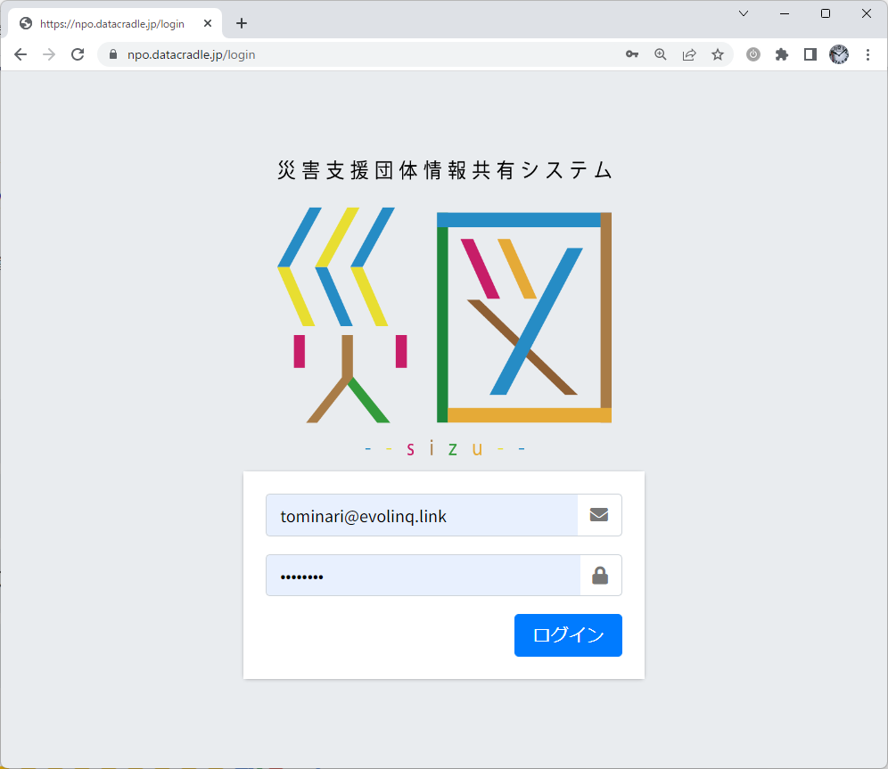
-
メールアドレスに利用者登録した際のメールアドレスを入力してください。
-
パスワードには、利用者登録した際のパスワードを入力してください。
|
Note
|
推奨WEBブラウザは以下のとおりです(最新版をお使いください)。 |
-
マイクロソフト Edge(Chromium版)
-
Google Chrome
-
Apple Safari(macOSのみ)
4.3. トップ画面
システムにログインすると、トップ画面を表示します。
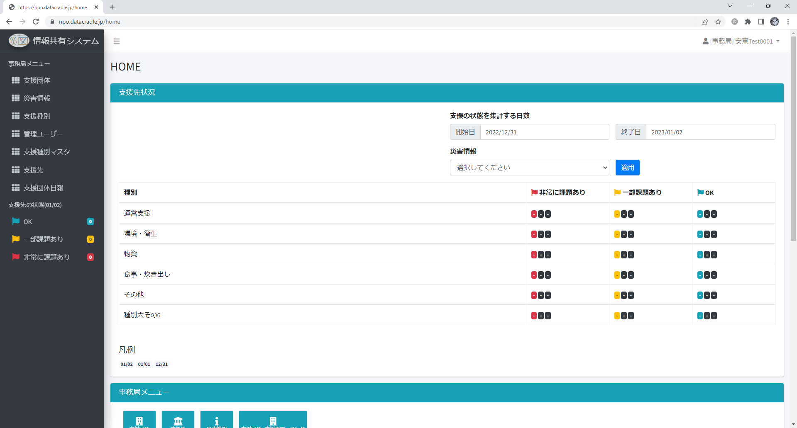
トップ画面の構成は、以下のとおりです。
4.3.1. 事務局メニュー
事務局メニューでは、利用する機能を選択できます。また、下部には、支援先の状況を信号機を模した、"青色"、"黄色"、"赤色"で表示します。
-
支援団体
支援団体をメンテナンスする画面を表示します。 -
災害情報
災害情報をメンテナンスする画面を表示します。 -
支援種別
支援種別を毎に対応する団体表示します。 -
管理ユーザー
管理用のユーザーをメンテナンスする画面を表示します。 -
支援種別マスタ
支援種別をメンテナンスする画面を表示します。 -
支援先
支援先情報画面を表示します。 -
支援団体日報
支援団体日報画面を表示します。
4.3.2. メイン画面
メイン画面では、以下の機能が利用できます。
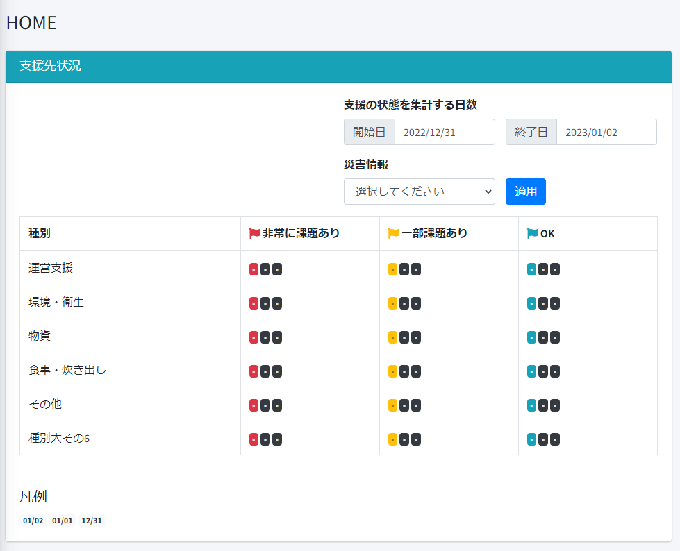
-
支援の状態を集計する日数 状況表示のために集計する期間を入力します。開始日と終了日を範囲しています。 デフォルトの範囲は、過去３日間です。
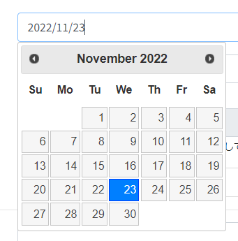 -
災害情報
集計対象となる災害名を選択します。 -
状況（一覧）
災害全体の支援状況を集計・一覧表示します。-
種別
支援種別を表示します。 -
支援先状況
支援先の情報を以下の区分で延べ件数を表示します。-
非常に課題あり
-
一部課題あり
-
OK
-
-
4.3.3. 事務局メニュー
事務局メニューには、以下の項目を表示します。 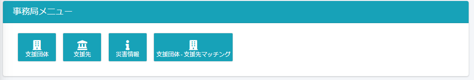
-
支援団体
支援団体をメンテナンスする画面を表示します。 -
支援先
支援先情報画面を表示します。 -
災害情報
災害情報をメンテナンスする画面を表示します。 -
支援先・支援団体マッチング
支援先・支援団体のマッチングに利用する画面を表示します。（第二期開発予定）
4.3.4. 地図表示
支援先の状況を地図上に表示します。地図の旗クリックにより、選択した支援先の状況を詳細に確認可能です。
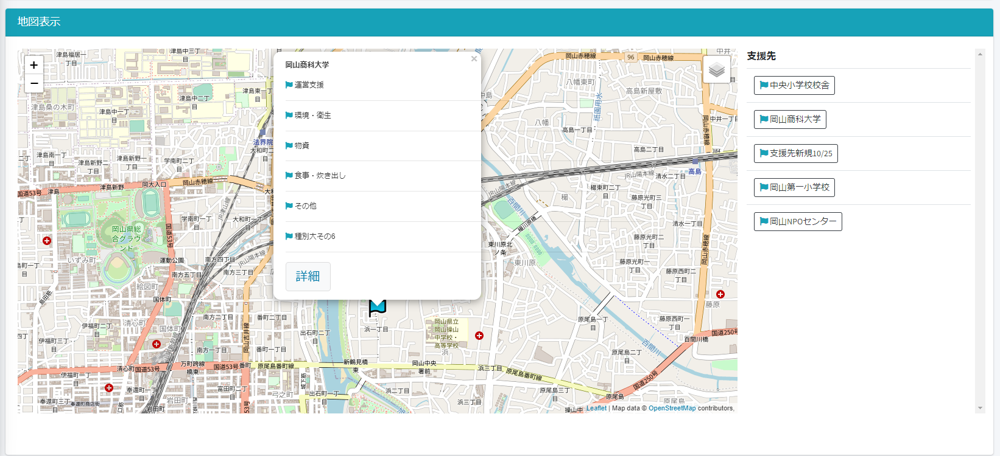
4.4. 支援団体
支援団体をメンテナンスする画面を表示します。
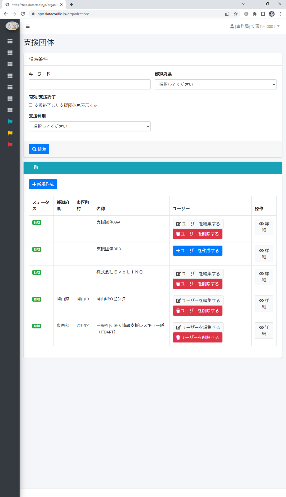
支援団体画面では、以下の条件で支援団体日報を検索することができます。
-
キーワード
支援団体の情報の中から、キーワードで検索します。 -
都道府県
支援団体の所在地の都道府県を指定して検索します。 -
有効/支援終了
支援団体が支援活動を実施中か否かを指定して検索をします。 -
支援種別
支援団体が対象としている支援種別を選択して、検索をします。 -
新規作成
新しく支援団体を登録するため、支援団体登録画面を表示します。 -
一覧画面
-
ステータス
支援団体が支援中か否かを表示します。 -
都道府県
支援団体所在地の都道府県を表示します。 -
市町村
支援団体所在地の市町村を表示します。 -
名称
支援団体の名称を表示します。 -
ユーザー
支援団体向けのアカウントを設定します。-
ユーザーを編集する
ユーザー名、メールアドレス、パスワードを変更するため、支援団体ユーザー編集画面を表示します。 -
ユーザーを追加する 支援団体用のユーザーを追加するため、支援団体ユーザー編集画面を表示します。
-
-
操作
-
詳細
支援団体詳細画面を表示します。
-
-
4.4.1. 支援団体登録画面
支援団体登録画面では、支援団体を新規に登録、編集を行います。新規登録の場合、各項目は初期値で表示します。編集の場合、編集対象のデータを初期値として表示します。
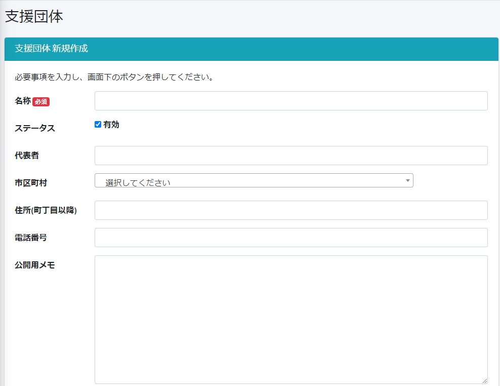
-
名称
支援団体の名称を入力します。 -
ステータス
支援団体が支援中か否かを選択します。 -
代表者
支援団体の代表者名を入力します。 -
市区町村
支援団体所在地の都道府県、市町村を選択します。 -
住所(町丁目以降)
支援団体所在地の住所(町丁目以降)を入力します。 -
電話番号
支援団体の電話番号を入力します。 -
公開用メモ
支援団体の公開用のメモを入力します。 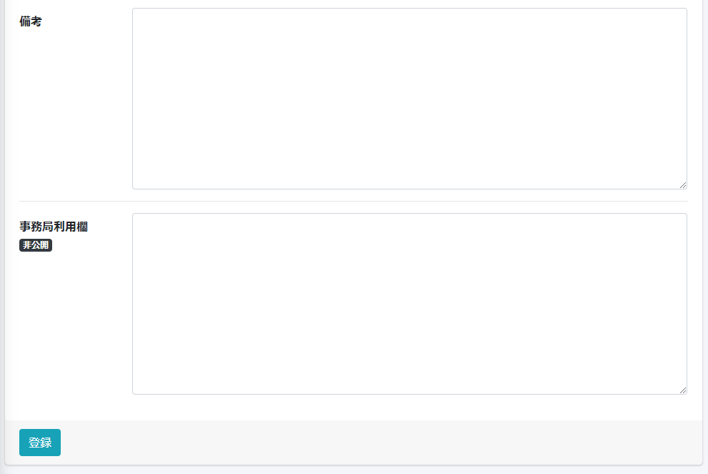 -
備考
支援団体の備考を入力します。 -
事務局利用欄
新団体について、事務局として記録する事項を入力します。 -
登録
登録ボタンを押すと、支援団体の情報を登録・更新します。
4.4.2. 支援団体ユーザー編集画面
支援団体ユーザーの新規登録、編集を行います。新規登録の場合、各項目は初期値で表示します。編集の場合、編集対象のデータを初期値として表示します。
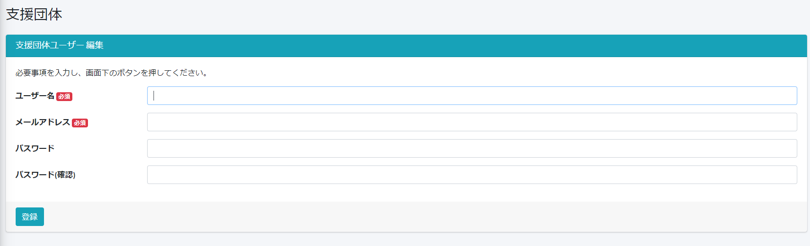
入力・編集できる項目は、以下のとおりです。
-
ユーザー名
支援団体の表示に利用するユーザー名を入力します。 -
メールアドレス
支援団体がログインに利用するメールアドレスを入力します。 -
パスワード 支援団体がログインに利用するパスワードを入力します。
-
パスワード(確認) 支援団体がログインに利用するパスワードを確認のため入力します。
-
登録 入力した内容で、支援団体ユーザーを登録・更新します。
4.4.3. 支援団体詳細画面
支援団体の詳細情報および対応可能な支援種別を表示します。
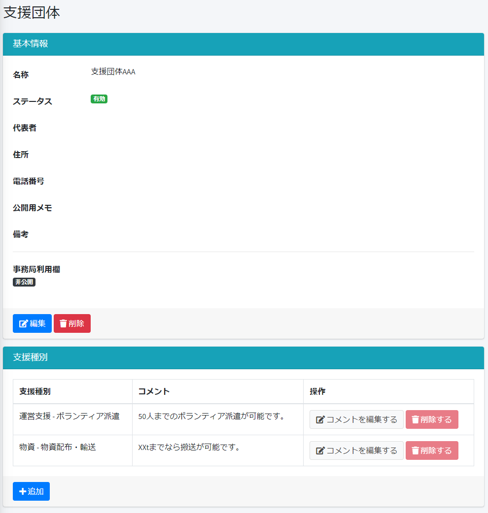
支援団体詳細画面では、以下の項目を表示します。
-
基本情報
-
名称
支援団体の名称を表示します。 -
ステータス
支援団体が支援活動を実施中か、否かを表示します。 -
代表者
支援団体の代表者を表示します。 -
住所
支援団体の住所を表示します。 -
電話番号
支援団体の電話番号を表示します。電話番号には、番号だけでなく、メモも入力を可能とします。 -
公開用メモ
支援団体についてのメモを表示します。 -
備考
支援団体の備考を表示します。 -
事務局利用欄
新団体について、事務局として記録する事項を表示します。
-
-
支援種別
-
支援種別
支援団体が対応している支援種別を表示します。 -
コメント 支援種別に対する対応力などのコメントを表示します。
-
操作
-
コメントを編集する 支援種別毎のコメントを編集する画面を表示します。
-
削除 当該支援種別のデータを削除します。
-
4.4.4. 支援団体・支援種別・コメント画面
支援団体が対応可能な支援種別に対するコメントを登録、修正、消去します。
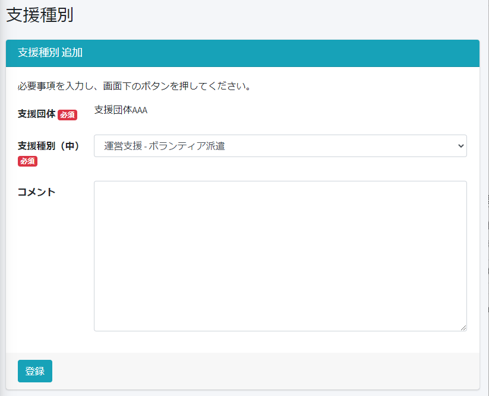
-
支援団体
コメントを設定する支援団体名称を表示します。 -
支援種別
コメントを設定する支援種別を表示します。 -
コメント
支援種別に対する対応力などのコメントを入力します。 -
登録
登録ボタンを押すと、コメントを登録・更新します。
4.5. 災害情報
支援情報を災害でカテゴリ分けするため、災害名を登録します。災害名は、全ての情報を分類するために利用します。
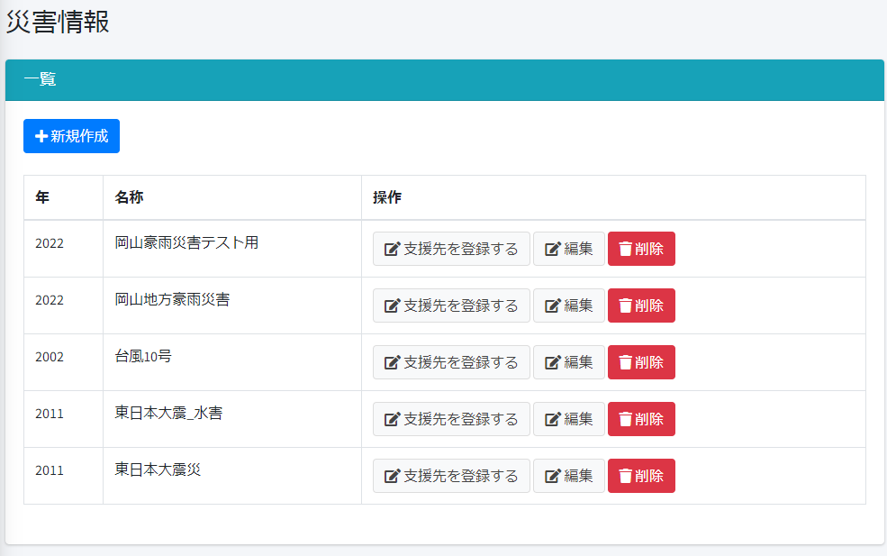
一覧表示の内容は、以下のとおりです。
-
年
災害が発生した年を表示します。 -
名称
災害の名称を表示します。 -
操作
-
支援先を登録する 災害に関連つけられる支援先を設定するため、支援先の紐づけ画面を表示します。
-
4.5.1. 支援先の紐づけ画面
支援先の紐づけ画面では、災害で開設されている支援先と災害情報の関連付けを行います。
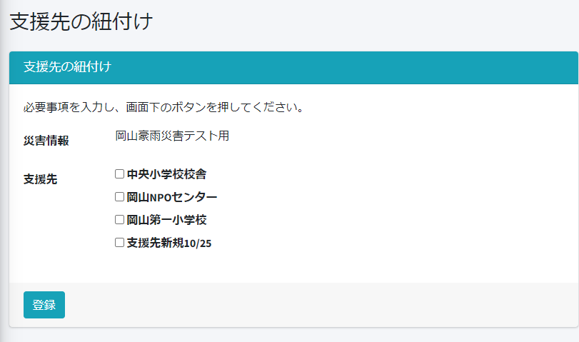
-
災害情報 紐づけを行う災害名を表示します。
-
支援先の一覧を表示し、紐づけを行う支援先をチェックします。
-
登録 設定した内容で、支援先の紐づけを登録します。
4.6. 支援種別マスタ
支援の内容をカテゴリ分けするため、支援種別マスタを設定します。支援種別は、大、中の２段階に分類します。
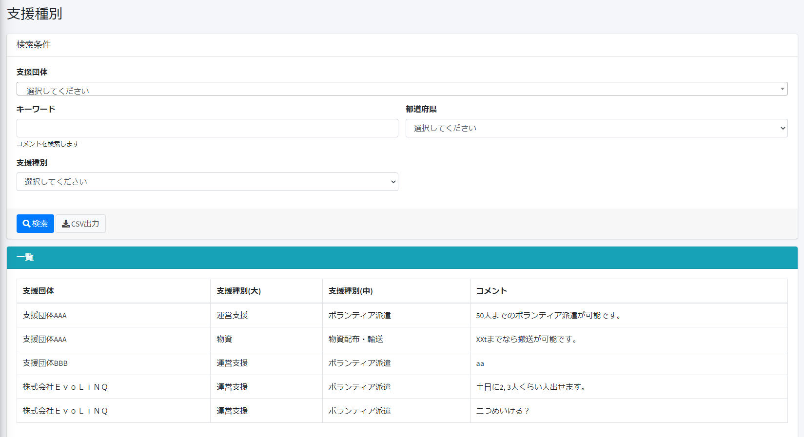
-
新規作成
支援種別(大)新規作成画面を表示します。 -
名称
支援種別（大）の名称を表示します。 -
支援種別（中）
支援種別（大）に紐づく支援種別（中）を表示します。-
支援種別（中）管理
支援種別（中）管理画面を表示します。
-
-
操作
-
編集
支援種別（大）編集画面を表示します。 -
削除
支援種別（大）を削除します。支援種別（大）を削除すると、紐づいている支援種別（中）も合わせて削除します。
-
4.6.1. 支援種別（大）登録画面
支援種別（大）の新規登録、編集を行います。新規登録の場合、各項目は初期値で表示します。編集の場合、編集対象のデータを初期値として表示します。
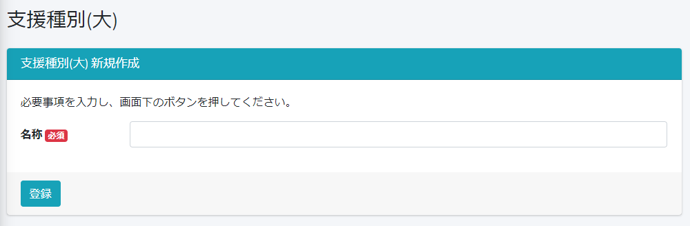
-
名称
支援種別（大）の名称を入力します。 -
登録
支援種別（大）を登録・更新します。
4.6.2. 支援種別（中）管理画面
支援種別（中）の新規登録、編集を行います。新規登録の場合、各項目は初期値で表示します。編集の場合、編集対象のデータを初期値として表示します。
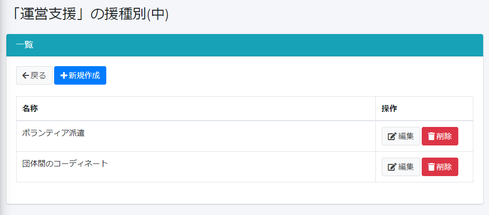
-
新規作成
支援種別（中）登録画面を表示します。 -
戻る
支援種別（大）画面に戻ります。 -
名称
支援種別（中）の名称を表示します。 -
操作
-
編集
支援種別（中）登録画面を表示します。 -
削除
支援種別（中）を削除します。
-
4.7. 支援団体日報
支援団体日報機能では、支援団体の日報を登録、閲覧および削除を行います。
4.7.1. 支援団体日報画面
支援団体日報では、支援団体の日報を検索表示し、一覧表示します。一覧表示した日報は、編集、削除が可能です。
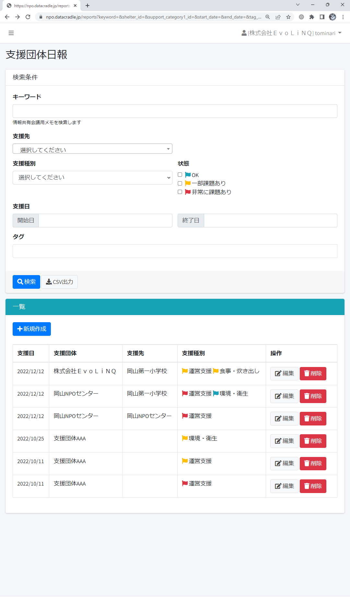
支援団体日報画面では、以下の条件で支援団体日報を検索することができます。
-
キーワード
支援団体日報のメモ欄の中から、キーワードで検索を行います。 -
支援先
日報を登録した支援団体を指定して、日報を検索します。 -
支援種別
日報の支援種別を指定して、日報を検索します。 -
状態
日報の(避難先)状態を指定して、日報を検索します。 -
支援開始日、支援終了日
日報の支援日を指定して、日報を検索します。開始・終了の範囲を指定して、日報を検索します。 -
タグ
日報に設定した”タグ”を指定して、日報を検索します。 -
検索
設定した条件で支援団体日報を検索します。 -
CSV出力
指定した条件で支援団体日報をCSV出力します。 -
新規登録
新規に日報入力画面を表示します。 -
一覧表示
-
支援日
当該日報の支援日を表示します。 -
支援団体
当該日報の支援団体を表示します。 -
支援先
当該日報の支援団体を表示します。 -
支援種別
当該日報の支援種別と状況を表示します。 -
操作
-
編集
一覧表示されている日報を編集するため、日報入力画面を表示します。 -
削除
一覧表示されている日報を削除します。
-
-
4.7.2. 日報入力
支援団体の日報を入力します。新規登録の場合、各項目は初期値で表示します。編集の場合、編集対象のデータを初期値として表示します。
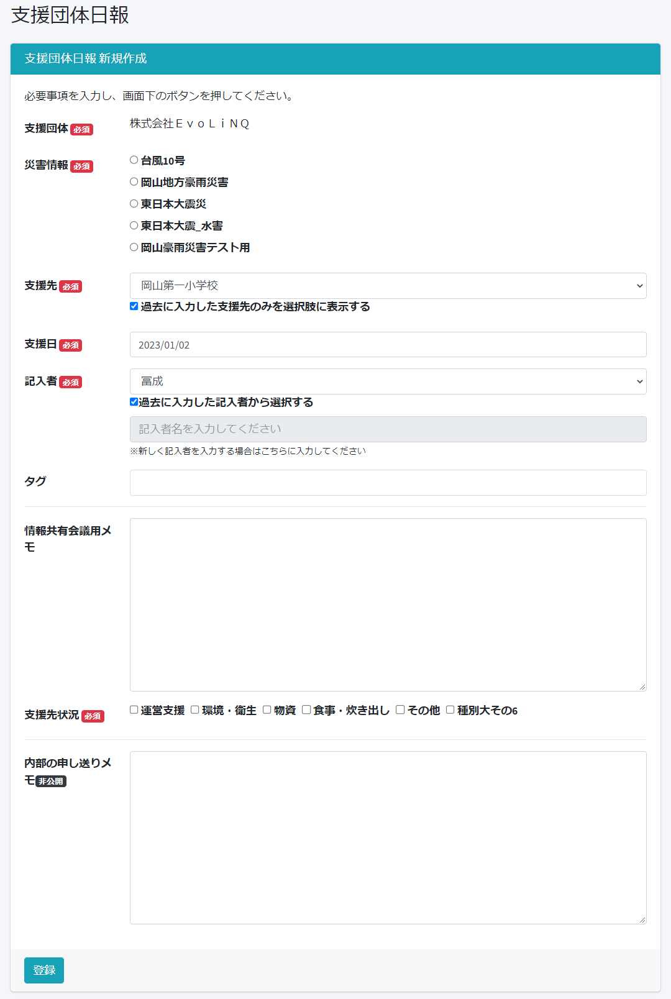
日報入力では、以下の項目を入力します。
-
支援団体
支援団体名称(表示のみ) -
災害情報
当該日報の災害名を設定します。災害名は、システム運用者(岡山NPOセンター)で設定登録したものが選択できます。 -
支援先
当該日報の支援先を設定します。支援先は、登録済みのみ選択できます。支援先が無い場合、支援先登録機能で追加することができます。
「過去に入力した支援先のみを選択肢に表示する」をチェックすると以前に支援を行ったことがある支援先から簡単に選択ができます。
「地図検索」を選択すると、画面上に地図を表示し、位置から支援先を選択できます。
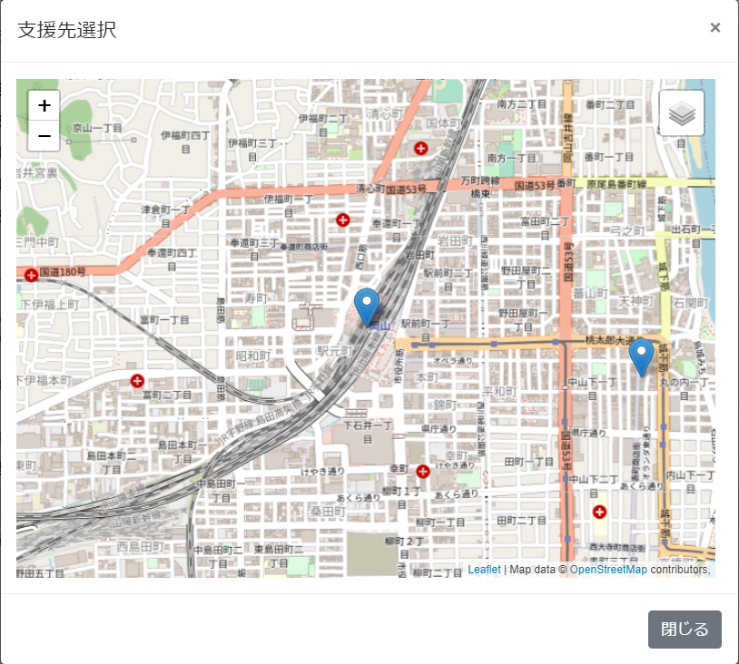 -
支援日
日報の日付を入力します。入力は、キーボードからの入力、マウスからの入力ができます。
-
記入者
日報を入力する人の名前を入力します。
「過去に入力した記入者から選択する」をチェックすると以前に入力したことがある人の名前をリストから選択できます。 -
タグ
検索用の”タグ”を入力します。タグは、運用する人たちで自由に決めることができます。 -
情報共有会議用メモ
情報共有会議で報告する内容を記入します。ここには、他の支援団体も公開する情報を入力してください。 -
支援先状況
支援先の状況から、支援した種別をチェックします。種別をチェックすると、種別ごとに状況選択、メモ入力をすることができます。
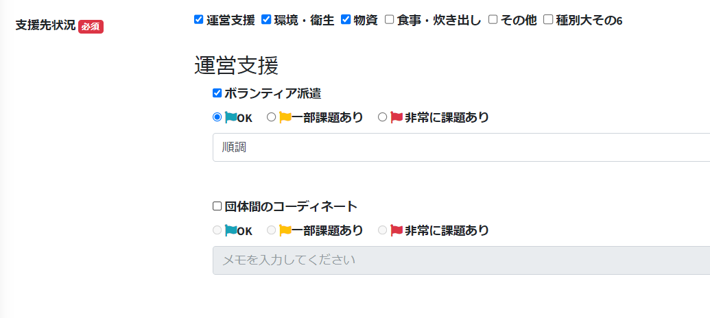 -
内部用メモ
入力する自団体向けのメモを入力します。この情報は、他の団体には公開されません。
4.8. 支援先情報
支援先情報では、支援先情報を検索表示し、一覧表示します。一覧表示した支援情報は、編集、削除が可能です。
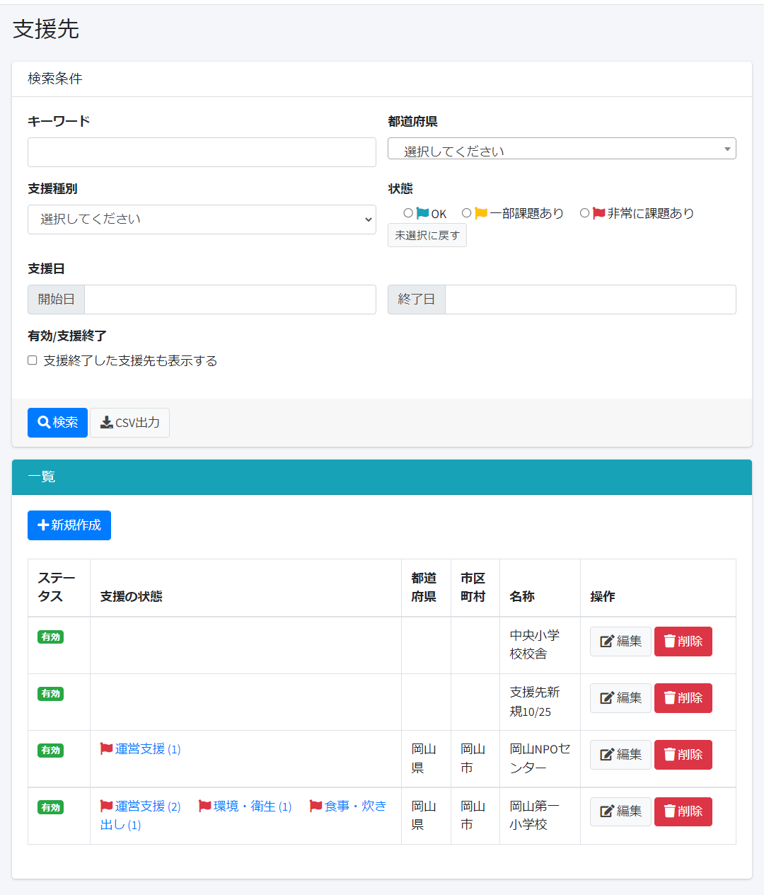
支援先情報画面では、以下の条件で支援先を検索することができます。
-
キーワード
支援先の情報からキーワードで部分一致検索します。 -
都道府県
支援先を都道県指定で検索します。 -
支援種別
支援種別が登録されている支援先を検索します。 -
状態
状態が登録されている支援先を検索します。 -
支援開始日、支援終了日
当該支援先に対する日報の支援日を指定して、日報を検索します。開始・終了の範囲を指定して、日報を検索します。 -
有効/支援終了
支援が続いている支援先、支援が終了している支援先を指定して検索します。 -
検索
設定した条件で支援先を検索します。 -
CSV出力
指定した条件で支援先をCSV出力します。 -
新規登録
新規に支援先登録画面を表示します。 -
一覧表示
-
ステータス
当該支援先で、支援を継続しているのか、支援を終了しているのかを表示します。 -
支援の状態
当該支援先の支援種別、支援の状態を表示します。 -
都道府県
支援先の所在地（都道府県）を表示します。 -
市町村
支援先の所在地（市町村）を表示します。 -
名称
支援先の名称を表示します。 -
操作
-
編集
一覧表示されている支援先を編集するため、支援先登録画面を表示します。 -
削除
一覧表示されている支援先を削除します。
-
-
4.8.1. 支援先登録
支援先の情報を入力します。新規登録の場合、各項目は初期値で表示します。編集の場合、編集対象のデータを初期値として表示します。
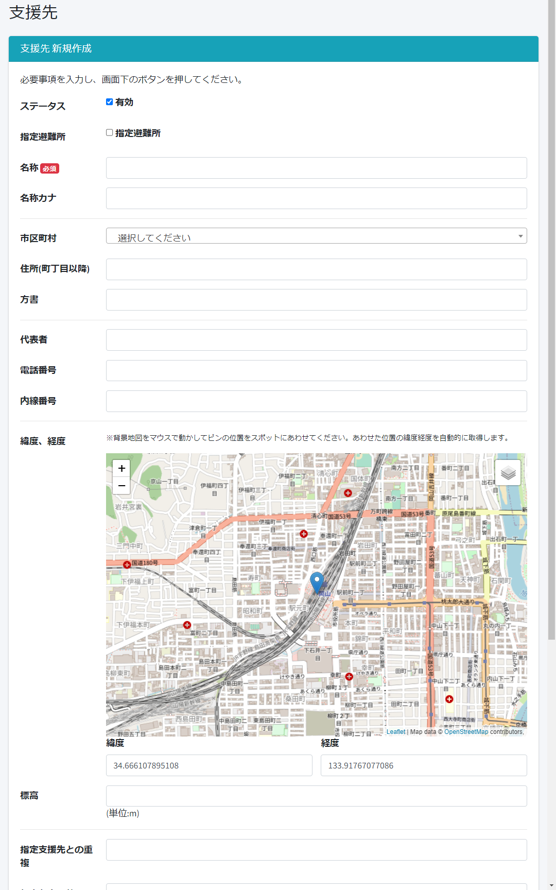
支援先登録では、以下の項目を入力します。
-
ステータス
支援先への支援が続いている場合、「有効」をチェックします。 -
指定避難場所
支援先が指定避難場所の場合、チェックします。 -
名称
支援先の名称を入力します。 -
名称カナ
支援先の名称のカナをカタカナで入力します。 -
市町村
支援先所在地の都道府県、市町村をリストから選択します。 -
住所（町丁目以降）
支援先所在地の住所（町丁目以降）を入力します。 -
方書
支援先所在地の建物名称などを入力します。 -
代表者
支援先の代表者を入力します。 -
電話番号
支援先の電話番号を入力します。 -
内線番号
支援先の内線番号を入力します。 -
緯度経度
支援先の位置を緯度経度で入力します。緯度経度は、直接入力の他、地図上で選択ができます。地図上で選択する場合、地図中心のピンに位置を合わせることで、緯度経度が自動で設定されます。 -
標高
施設の標高を入力します。
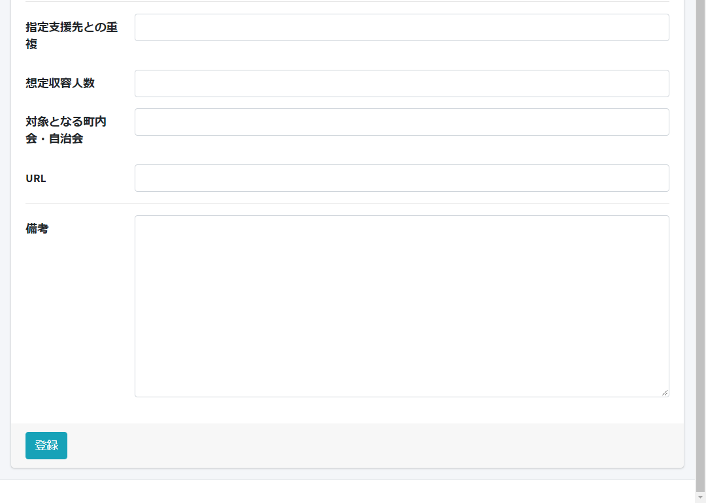
13.指定支援先との重複
指定支援先と重複がある場合、その旨を自由入力します。
14.想定収容人数
支援先に収容可能な人数を自由入力します。数量のみでなく、文字も入力することができます。
15.対象となる町内会・自治会 + 支援先に関連する町内会、自治会などを入力します。
16.URL
支援先に関連するURlがある場合、入力します。
17.備考 支援先についての備考などを自由に入力します。